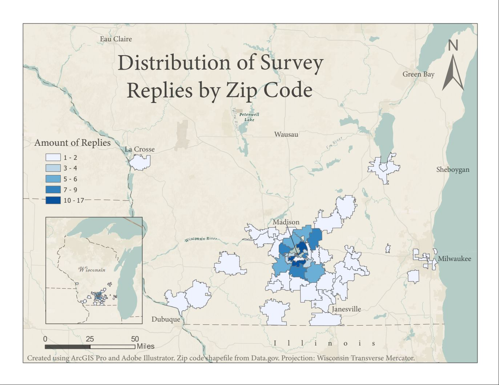
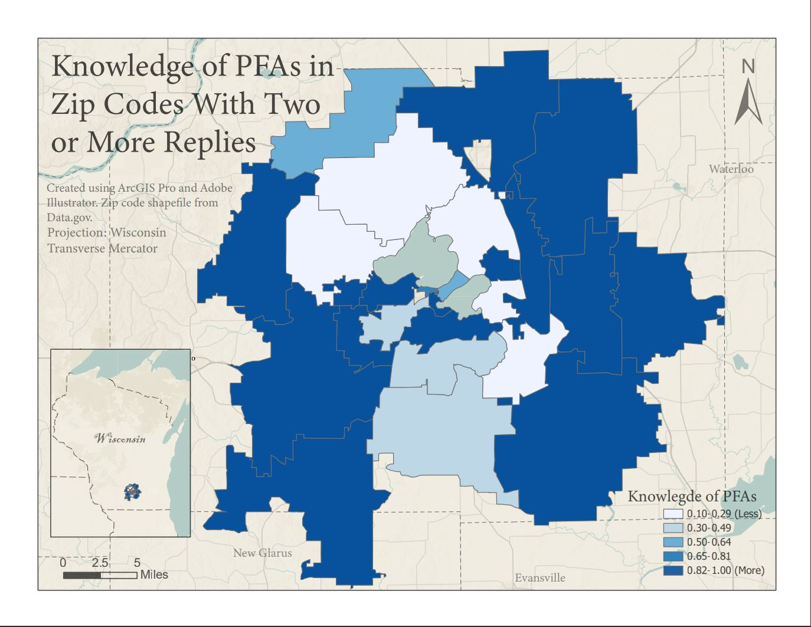

I made these maps as a part of my senior capstone project. Our project involved surveying
local anglers on their knowledge of PFAs in the waterways. Visualizing the distribution
of respondents allowed us to see the reach of our survey. The second Choropleth showed
us therespondents from our area of interest likeliness of knowing what PFAs are.
